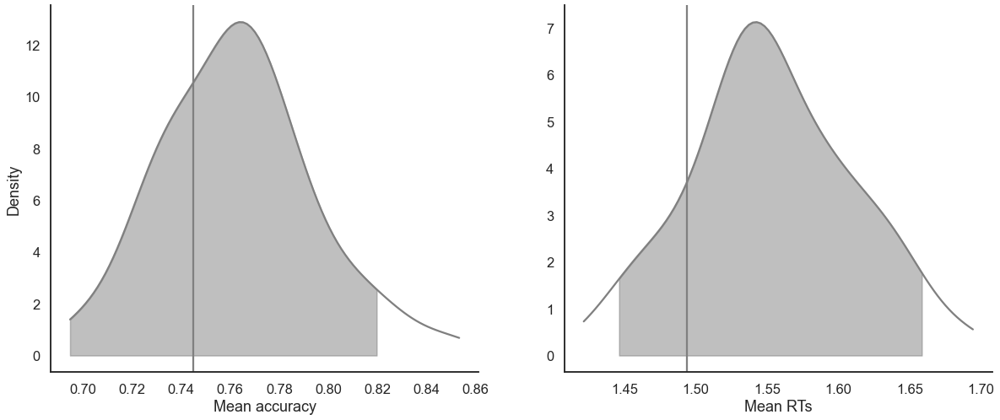
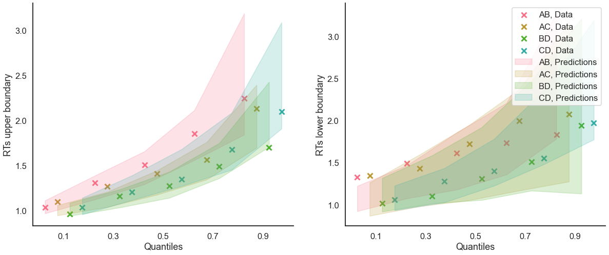

Fit the RLDDM on individual data
[1]:
import pandas as pd
from rlssm.utility.load_data import load_example_dataset
from rlssm.model.models_DDM import RLDDModel
Import the data
[2]:
# import some example data:
data = load_example_dataset(hierarchical_levels = 1)
data.head()
[2]:
| participant | block_label | trial_block | f_cor | f_inc | cor_option | inc_option | times_seen | rt | accuracy | |
|---|---|---|---|---|---|---|---|---|---|---|
| 0 | 8 | 1 | 1 | 34 | 37 | 2 | 1 | 1 | 2.227985 | 1 |
| 1 | 8 | 1 | 2 | 41 | 35 | 2 | 1 | 2 | 2.215362 | 1 |
| 2 | 8 | 1 | 3 | 51 | 51 | 4 | 3 | 1 | 1.574919 | 0 |
| 3 | 8 | 1 | 4 | 55 | 43 | 4 | 3 | 2 | 1.971866 | 0 |
| 4 | 8 | 1 | 5 | 53 | 48 | 4 | 2 | 3 | 1.645202 | 1 |
Initialize the model
[3]:
# you can "turn on and off" different mechanisms:
model = RLDDModel(hierarchical_levels=1,
separate_learning_rates=False,
threshold_modulation=False,
nonlinear_mapping=True)
15:26:55 - cmdstanpy - INFO - compiling stan file /home/andrei/PycharmProjects/rlssm/rlssm/stan_models/RLDDM/RLDDM_nonlin.stan to exe file /home/andrei/PycharmProjects/rlssm/rlssm/stan_models/RLDDM/RLDDM_nonlin
15:27:12 - cmdstanpy - INFO - compiled model executable: /home/andrei/PycharmProjects/rlssm/rlssm/stan_models/RLDDM/RLDDM_nonlin
15:27:12 - cmdstanpy - WARNING - Stan compiler has produced 12 warnings:
15:27:12 - cmdstanpy - WARNING -
--- Translating Stan model to C++ code ---
bin/stanc --o=/home/andrei/PycharmProjects/rlssm/rlssm/stan_models/RLDDM/RLDDM_nonlin.hpp /home/andrei/PycharmProjects/rlssm/rlssm/stan_models/RLDDM/RLDDM_nonlin.stan
Warning in '/home/andrei/PycharmProjects/rlssm/rlssm/stan_models/RLDDM/RLDDM_nonlin.stan', line 4, column 1: Declaration
of arrays by placing brackets after a variable name is deprecated and
will be removed in Stan 2.32.0. Instead use the array keyword before the
type. This can be changed automatically using the auto-format flag to
stanc
Warning in '/home/andrei/PycharmProjects/rlssm/rlssm/stan_models/RLDDM/RLDDM_nonlin.stan', line 7, column 1: Declaration
of arrays by placing brackets after a variable name is deprecated and
will be removed in Stan 2.32.0. Instead use the array keyword before the
type. This can be changed automatically using the auto-format flag to
stanc
Warning in '/home/andrei/PycharmProjects/rlssm/rlssm/stan_models/RLDDM/RLDDM_nonlin.stan', line 8, column 1: Declaration
of arrays by placing brackets after a variable name is deprecated and
will be removed in Stan 2.32.0. Instead use the array keyword before the
type. This can be changed automatically using the auto-format flag to
stanc
Warning in '/home/andrei/PycharmProjects/rlssm/rlssm/stan_models/RLDDM/RLDDM_nonlin.stan', line 9, column 1: Declaration
of arrays by placing brackets after a variable name is deprecated and
will be removed in Stan 2.32.0. Instead use the array keyword before the
type. This can be changed automatically using the auto-format flag to
stanc
Warning in '/home/andrei/PycharmProjects/rlssm/rlssm/stan_models/RLDDM/RLDDM_nonlin.stan', line 11, column 1: Declaration
of arrays by placing brackets after a variable name is deprecated and
will be removed in Stan 2.32.0. Instead use the array keyword before the
type. This can be changed automatically using the auto-format flag to
stanc
Warning in '/home/andrei/PycharmProjects/rlssm/rlssm/stan_models/RLDDM/RLDDM_nonlin.stan', line 12, column 1: Declaration
of arrays by placing brackets after a variable name is deprecated and
will be removed in Stan 2.32.0. Instead use the array keyword before the
type. This can be changed automatically using the auto-format flag to
stanc
Warning in '/home/andrei/PycharmProjects/rlssm/rlssm/stan_models/RLDDM/RLDDM_nonlin.stan', line 35, column 1: Declaration
of arrays by placing brackets after a variable name is deprecated and
will be removed in Stan 2.32.0. Instead use the array keyword before the
type. This can be changed automatically using the auto-format flag to
stanc
Warning in '/home/andrei/PycharmProjects/rlssm/rlssm/stan_models/RLDDM/RLDDM_nonlin.stan', line 36, column 1: Declaration
of arrays by placing brackets after a variable name is deprecated and
will be removed in Stan 2.32.0. Instead use the array keyword before the
type. This can be changed automatically using the auto-format flag to
stanc
Warning in '/home/andrei/PycharmProjects/rlssm/rlssm/stan_models/RLDDM/RLDDM_nonlin.stan', line 37, column 1: Declaration
of arrays by placing brackets after a variable name is deprecated and
will be removed in Stan 2.32.0. Instead use the array keyword before the
type. This can be changed automatically using the auto-format flag to
stanc
Warning in '/home/andrei/PycharmProjects/rlssm/rlssm/stan_models/RLDDM/RLDDM_nonlin.stan', line 38, column 1: Declaration
of arrays by placing brackets after a variable name is deprecated and
will be removed in Stan 2.32.0. Instead use the array keyword before the
type. This can be changed automatically using the auto-format flag to
stanc
Warning in '/home/andrei/PycharmProjects/rlssm/rlssm/stan_models/RLDDM/RLDDM_nonlin.stan', line 43, column 1: Declaration
of arrays by placing brackets after a variable name is deprecated and
will be removed in Stan 2.32.0. Instead use the array keyword before the
type. This can be changed automatically using the auto-format flag to
stanc
Warning in '/home/andrei/PycharmProjects/rlssm/rlssm/stan_models/RLDDM/RLDDM_nonlin.stan', line 44, column 1: Declaration
of arrays by placing brackets after a variable name is deprecated and
will be removed in Stan 2.32.0. Instead use the array keyword before the
type. This can be changed automatically using the auto-format flag to
stanc
--- Compiling, linking C++ code ---
g++ -std=c++1y -pthread -D_REENTRANT -Wno-sign-compare -Wno-ignored-attributes -I stan/lib/stan_math/lib/tbb_2020.3/include -O3 -I src -I stan/src -I lib/rapidjson_1.1.0/ -I lib/CLI11-1.9.1/ -I stan/lib/stan_math/ -I stan/lib/stan_math/lib/eigen_3.3.9 -I stan/lib/stan_math/lib/boost_1.78.0 -I stan/lib/stan_math/lib/sundials_6.1.1/include -I stan/lib/stan_math/lib/sundials_6.1.1/src/sundials -DBOOST_DISABLE_ASSERTS -c -Wno-ignored-attributes -x c++ -o /home/andrei/PycharmProjects/rlssm/rlssm/stan_models/RLDDM/RLDDM_nonlin.o /home/andrei/PycharmProjects/rlssm/rlssm/stan_models/RLDDM/RLDDM_nonlin.hpp
g++ -std=c++1y -pthread -D_REENTRANT -Wno-sign-compare -Wno-ignored-attributes -I stan/lib/stan_math/lib/tbb_2020.3/include -O3 -I src -I stan/src -I lib/rapidjson_1.1.0/ -I lib/CLI11-1.9.1/ -I stan/lib/stan_math/ -I stan/lib/stan_math/lib/eigen_3.3.9 -I stan/lib/stan_math/lib/boost_1.78.0 -I stan/lib/stan_math/lib/sundials_6.1.1/include -I stan/lib/stan_math/lib/sundials_6.1.1/src/sundials -DBOOST_DISABLE_ASSERTS -Wl,-L,"/home/andrei/.cmdstan/cmdstan-2.30.0/stan/lib/stan_math/lib/tbb" -Wl,-rpath,"/home/andrei/.cmdstan/cmdstan-2.30.0/stan/lib/stan_math/lib/tbb" /home/andrei/PycharmProjects/rlssm/rlssm/stan_models/RLDDM/RLDDM_nonlin.o src/cmdstan/main.o -Wl,-L,"/home/andrei/.cmdstan/cmdstan-2.30.0/stan/lib/stan_math/lib/tbb" -Wl,-rpath,"/home/andrei/.cmdstan/cmdstan-2.30.0/stan/lib/stan_math/lib/tbb" stan/lib/stan_math/lib/sundials_6.1.1/lib/libsundials_nvecserial.a stan/lib/stan_math/lib/sundials_6.1.1/lib/libsundials_cvodes.a stan/lib/stan_math/lib/sundials_6.1.1/lib/libsundials_idas.a stan/lib/stan_math/lib/sundials_6.1.1/lib/libsundials_kinsol.a stan/lib/stan_math/lib/tbb/libtbb.so.2 -o /home/andrei/PycharmProjects/rlssm/rlssm/stan_models/RLDDM/RLDDM_nonlin
rm -f /home/andrei/PycharmProjects/rlssm/rlssm/stan_models/RLDDM/RLDDM_nonlin.o
Fit
[4]:
# sampling parameters
n_warmup = 1000
n_sampling = 3000
n_chains = 2
# learning parameters
K = 4 # n options in a learning block (participants see 2 at a time)
initial_value_learning = 27.5 # initial learning value (Q0)
[5]:
model_fit = model.fit(
data,
K,
initial_value_learning,
iter_warmup=n_warmup,
iter_sampling=n_sampling,
chains = n_chains)
15:27:12 - cmdstanpy - INFO - CmdStan start processing
Fitting the model using the priors:
alpha_priors {'mu': 0, 'sd': 1}
drift_scaling_priors {'mu': 1, 'sd': 50}
drift_asymptote_priors {'mu': 1, 'sd': 50}
threshold_priors {'mu': 1, 'sd': 5}
ndt_priors {'mu': 1, 'sd': 1}
15:28:47 - cmdstanpy - INFO - CmdStan done processing.
15:28:47 - cmdstanpy - WARNING - Non-fatal error during sampling:
Exception: wiener_lpdf: Random variable = 2.22798, but must be greater than nondecision time = 58.3251 (in '/home/andrei/PycharmProjects/rlssm/rlssm/stan_models/RLDDM/RLDDM_nonlin.stan', line 90, column 1 to column 59)
Exception: wiener_lpdf: Random variable = 2.22798, but must be greater than nondecision time = 57.0011 (in '/home/andrei/PycharmProjects/rlssm/rlssm/stan_models/RLDDM/RLDDM_nonlin.stan', line 90, column 1 to column 59)
Exception: wiener_lpdf: Random variable = 2.22798, but must be greater than nondecision time = 13.3708 (in '/home/andrei/PycharmProjects/rlssm/rlssm/stan_models/RLDDM/RLDDM_nonlin.stan', line 90, column 1 to column 59)
Exception: wiener_lpdf: Random variable = 2.22798, but must be greater than nondecision time = 2.44825 (in '/home/andrei/PycharmProjects/rlssm/rlssm/stan_models/RLDDM/RLDDM_nonlin.stan', line 90, column 1 to column 59)
Exception: wiener_lpdf: Boundary separation[1] is inf, but must be positive finite! (in '/home/andrei/PycharmProjects/rlssm/rlssm/stan_models/RLDDM/RLDDM_nonlin.stan', line 90, column 1 to column 59)
Exception: wiener_lpdf: Random variable = 2.22798, but must be greater than nondecision time = 174.954 (in '/home/andrei/PycharmProjects/rlssm/rlssm/stan_models/RLDDM/RLDDM_nonlin.stan', line 90, column 1 to column 59)
Exception: wiener_lpdf: Random variable = 0.871705, but must be greater than nondecision time = 0.873868 (in '/home/andrei/PycharmProjects/rlssm/rlssm/stan_models/RLDDM/RLDDM_nonlin.stan', line 90, column 1 to column 59)
Exception: wiener_lpdf: Random variable = 1.02935, but must be greater than nondecision time = 1.06888 (in '/home/andrei/PycharmProjects/rlssm/rlssm/stan_models/RLDDM/RLDDM_nonlin.stan', line 90, column 1 to column 59)
Exception: wiener_lpdf: Drift rate[1] is -nan, but must be finite! (in '/home/andrei/PycharmProjects/rlssm/rlssm/stan_models/RLDDM/RLDDM_nonlin.stan', line 90, column 1 to column 59)
Exception: wiener_lpdf: Boundary separation[1] is inf, but must be positive finite! (in '/home/andrei/PycharmProjects/rlssm/rlssm/stan_models/RLDDM/RLDDM_nonlin.stan', line 90, column 1 to column 59)
Exception: wiener_lpdf: Boundary separation[1] is inf, but must be positive finite! (in '/home/andrei/PycharmProjects/rlssm/rlssm/stan_models/RLDDM/RLDDM_nonlin.stan', line 90, column 1 to column 59)
Exception: wiener_lpdf: Boundary separation[1] is inf, but must be positive finite! (in '/home/andrei/PycharmProjects/rlssm/rlssm/stan_models/RLDDM/RLDDM_nonlin.stan', line 90, column 1 to column 59)
Exception: wiener_lpdf: Random variable = 2.22798, but must be greater than nondecision time = 17.2339 (in '/home/andrei/PycharmProjects/rlssm/rlssm/stan_models/RLDDM/RLDDM_nonlin.stan', line 90, column 1 to column 59)
Exception: wiener_lpdf: Random variable = 2.22798, but must be greater than nondecision time = 3.12112 (in '/home/andrei/PycharmProjects/rlssm/rlssm/stan_models/RLDDM/RLDDM_nonlin.stan', line 90, column 1 to column 59)
Exception: wiener_lpdf: Boundary separation[1] is inf, but must be positive finite! (in '/home/andrei/PycharmProjects/rlssm/rlssm/stan_models/RLDDM/RLDDM_nonlin.stan', line 90, column 1 to column 59)
Exception: wiener_lpdf: Boundary separation[1] is inf, but must be positive finite! (in '/home/andrei/PycharmProjects/rlssm/rlssm/stan_models/RLDDM/RLDDM_nonlin.stan', line 90, column 1 to column 59)
Exception: wiener_lpdf: Random variable = 1.31268, but must be greater than nondecision time = 1.35804 (in '/home/andrei/PycharmProjects/rlssm/rlssm/stan_models/RLDDM/RLDDM_nonlin.stan', line 90, column 1 to column 59)
Exception: wiener_lpdf: Random variable = 1.31268, but must be greater than nondecision time = 1.34074 (in '/home/andrei/PycharmProjects/rlssm/rlssm/stan_models/RLDDM/RLDDM_nonlin.stan', line 90, column 1 to column 59)
Exception: wiener_lpdf: Random variable = 0.871705, but must be greater than nondecision time = 0.871906 (in '/home/andrei/PycharmProjects/rlssm/rlssm/stan_models/RLDDM/RLDDM_nonlin.stan', line 90, column 1 to column 59)
Exception: wiener_lpdf: Random variable = 0.902417, but must be greater than nondecision time = 0.905832 (in '/home/andrei/PycharmProjects/rlssm/rlssm/stan_models/RLDDM/RLDDM_nonlin.stan', line 90, column 1 to column 59)
Consider re-running with show_console=True if the above output is unclear!
15:28:48 - cmdstanpy - WARNING - Some chains may have failed to converge.
Chain 1 had 52 divergent transitions (1.7%)
Use function "diagnose()" to see further information.
Checks MCMC diagnostics:
n_eff / iter looks reasonable for all parameters
0 of 6000 iterations saturated the maximum tree depth of 10 (0.0%)
E-BFMI indicated no pathological behavior
52.0 of 6000 iterations ended with a divergence (0.8666666666666667%)
Try running with larger adapt_delta to remove the divergences
get Rhat
[6]:
model_fit.rhat
[6]:
| rhat | variable | |
|---|---|---|
| name | ||
| lp__ | 1.02327 | lp__ |
| alpha | 1.04611 | alpha |
| drift_scaling | 1.02566 | drift_scaling |
| drift_asymptote | 1.04662 | drift_asymptote |
| threshold | 1.00141 | threshold |
| ... | ... | ... |
| log_lik[236] | 1.00594 | log_lik[236] |
| log_lik[237] | 1.00238 | log_lik[237] |
| log_lik[238] | 1.02586 | log_lik[238] |
| log_lik[239] | 1.03686 | log_lik[239] |
| log_lik[240] | 1.03754 | log_lik[240] |
1698 rows × 2 columns
get wAIC
[7]:
model_fit.waic
[7]:
{'lppd': -296.9717138059476,
'p_waic': 6.808478254732092,
'waic': 607.5603841213594,
'waic_se': 31.442431171687662}
Posteriors
[8]:
model_fit.samples.describe()
[8]:
| transf_alpha | transf_drift_scaling | transf_drift_asymptote | transf_threshold | transf_ndt | |
|---|---|---|---|---|---|
| count | 6000.000000 | 6000.000000 | 6000.000000 | 6000.000000 | 6000.000000 |
| mean | 0.103184 | 8.776812 | 1.764893 | 2.170292 | 0.749957 |
| std | 0.107043 | 16.960350 | 0.275645 | 0.084360 | 0.018665 |
| min | 0.000173 | 0.098308 | 1.098710 | 1.911770 | 0.680545 |
| 25% | 0.026715 | 0.613513 | 1.582260 | 2.112750 | 0.738271 |
| 50% | 0.063141 | 1.502545 | 1.729455 | 2.165685 | 0.750493 |
| 75% | 0.145109 | 7.051130 | 1.903763 | 2.221528 | 0.762891 |
| max | 0.647179 | 131.511000 | 3.215940 | 2.477770 | 0.803935 |
[9]:
import seaborn as sns
sns.set(context = "talk",
style = "white",
palette = "husl",
rc={'figure.figsize':(15, 8)})
[10]:
g = model_fit.plot_posteriors(height=5, show_intervals='HDI')
g.axes.flat[1].set_xlim(0, 20)
g.axes.flat[2].set_xlim(0, 20);

Posterior predictives
Ungrouped
[11]:
pp = model_fit.get_posterior_predictives_df(n_posterior_predictives=100)
pp
[11]:
| variable | rt | ... | accuracy | ||||||||||||||||||
|---|---|---|---|---|---|---|---|---|---|---|---|---|---|---|---|---|---|---|---|---|---|
| trial | 1 | 2 | 3 | 4 | 5 | 6 | 7 | 8 | 9 | 10 | ... | 231 | 232 | 233 | 234 | 235 | 236 | 237 | 238 | 239 | 240 |
| sample | |||||||||||||||||||||
| 1 | 4.943201 | 4.690201 | 1.068201 | 1.124201 | 1.106201 | 2.280201 | 1.941201 | 1.309201 | 2.558201 | 1.108201 | ... | 1.0 | 1.0 | 1.0 | 0.0 | 0.0 | 1.0 | 1.0 | 1.0 | 1.0 | 1.0 |
| 2 | 2.437812 | 1.469812 | 1.339812 | 1.358812 | 1.606812 | 1.280812 | 1.701812 | 0.969812 | 1.730812 | 1.919812 | ... | 1.0 | 1.0 | 1.0 | 1.0 | 1.0 | 1.0 | 1.0 | 1.0 | 1.0 | 1.0 |
| 3 | 1.855209 | 0.996209 | 2.020209 | 1.586209 | 0.988209 | 1.934209 | 1.491209 | 1.439209 | 1.758209 | 0.955209 | ... | 1.0 | 1.0 | 1.0 | 1.0 | 1.0 | 1.0 | 1.0 | 1.0 | 1.0 | 1.0 |
| 4 | NaN | 1.538012 | 1.298012 | 1.902012 | 0.955012 | 1.611012 | 1.269012 | 3.001012 | 1.218012 | 1.130012 | ... | 1.0 | 1.0 | 1.0 | 1.0 | 1.0 | 1.0 | 1.0 | 1.0 | 1.0 | 1.0 |
| 5 | 2.977640 | 2.379640 | 1.349640 | 1.449640 | 1.327640 | 1.456640 | 1.198640 | 2.905640 | 2.044640 | 4.519640 | ... | 1.0 | 1.0 | 1.0 | 0.0 | 1.0 | 1.0 | 1.0 | 0.0 | 1.0 | 1.0 |
| ... | ... | ... | ... | ... | ... | ... | ... | ... | ... | ... | ... | ... | ... | ... | ... | ... | ... | ... | ... | ... | ... |
| 96 | 1.229986 | 1.879986 | 2.321986 | 1.207986 | 1.130986 | 1.445986 | 0.997986 | 3.883986 | 2.498986 | 1.581986 | ... | 1.0 | 1.0 | 1.0 | 1.0 | 1.0 | 1.0 | 1.0 | 0.0 | 1.0 | 1.0 |
| 97 | 2.544040 | 4.759040 | 3.175040 | 6.779040 | 1.158040 | 1.980040 | 2.766040 | 2.855040 | 2.664040 | 1.509040 | ... | 1.0 | 0.0 | 1.0 | 1.0 | 1.0 | 0.0 | 1.0 | 1.0 | 1.0 | 1.0 |
| 98 | 1.504756 | 2.116756 | 1.025756 | 1.139756 | 2.098756 | 1.373756 | 2.458756 | 1.916756 | 1.472756 | 2.538756 | ... | 1.0 | 1.0 | 1.0 | 1.0 | 1.0 | 1.0 | 1.0 | 1.0 | 1.0 | 1.0 |
| 99 | 1.876816 | 3.036816 | 2.321816 | 2.403816 | 2.240816 | 1.783816 | 2.624816 | 2.810816 | 1.346816 | 3.431816 | ... | 0.0 | 1.0 | 1.0 | 1.0 | 1.0 | 1.0 | 1.0 | 1.0 | 1.0 | 1.0 |
| 100 | 2.285537 | 1.262537 | 2.394537 | 2.581537 | 1.852537 | 2.108537 | 1.268537 | 1.099537 | 1.826537 | 2.055537 | ... | 1.0 | 1.0 | 1.0 | 1.0 | 1.0 | 1.0 | 1.0 | 1.0 | 1.0 | 1.0 |
100 rows × 480 columns
[12]:
pp_summary = model_fit.get_posterior_predictives_summary(n_posterior_predictives=100)
pp_summary
[12]:
| mean_accuracy | mean_rt | skewness | quant_10_rt_low | quant_30_rt_low | quant_50_rt_low | quant_70_rt_low | quant_90_rt_low | quant_10_rt_up | quant_30_rt_up | quant_50_rt_up | quant_70_rt_up | quant_90_rt_up | |
|---|---|---|---|---|---|---|---|---|---|---|---|---|---|
| sample | |||||||||||||
| 1 | 0.779167 | 1.728489 | 1.773916 | 1.041601 | 1.260401 | 1.539201 | 2.054401 | 2.677201 | 1.029601 | 1.196201 | 1.522201 | 1.852001 | 2.716601 |
| 2 | 0.816667 | 1.799249 | 1.560387 | 1.074912 | 1.279512 | 1.549812 | 1.966112 | 2.729512 | 1.059312 | 1.268312 | 1.531812 | 2.015812 | 2.951312 |
| 3 | 0.695833 | 1.758059 | 1.219739 | 1.059809 | 1.387009 | 1.556209 | 1.976209 | 2.980409 | 1.026609 | 1.258609 | 1.540209 | 2.021809 | 2.728409 |
| 4 | 0.779167 | 1.782016 | 1.885594 | 1.100212 | 1.290812 | 1.601012 | 1.872412 | 2.347412 | 1.035012 | 1.238612 | 1.545012 | 2.037012 | 3.015412 |
| 5 | 0.825000 | 1.879823 | 1.664034 | 1.071740 | 1.332440 | 1.636140 | 2.324040 | 3.191040 | 1.029940 | 1.298140 | 1.563140 | 2.074540 | 3.031140 |
| ... | ... | ... | ... | ... | ... | ... | ... | ... | ... | ... | ... | ... | ... |
| 96 | 0.850000 | 1.777953 | 1.371334 | 1.168986 | 1.388486 | 1.748986 | 2.198986 | 2.906986 | 1.002586 | 1.235886 | 1.570486 | 2.031286 | 2.622786 |
| 97 | 0.808333 | 1.706373 | 1.363352 | 1.047540 | 1.178540 | 1.292040 | 1.987040 | 2.596040 | 1.064540 | 1.278840 | 1.548040 | 1.887540 | 2.694440 |
| 98 | 0.870833 | 1.790785 | 2.240639 | 1.015756 | 1.237756 | 1.655756 | 2.239756 | 3.433756 | 1.060356 | 1.275956 | 1.558756 | 1.894556 | 2.642756 |
| 99 | 0.854167 | 1.737204 | 1.874272 | 1.035616 | 1.235216 | 1.471816 | 1.921216 | 3.705016 | 0.996616 | 1.256216 | 1.522816 | 1.883616 | 2.757416 |
| 100 | 0.875000 | 1.711283 | 2.135012 | 1.169637 | 1.427437 | 1.599037 | 1.815837 | 3.543537 | 1.002637 | 1.202837 | 1.513037 | 1.842337 | 2.574237 |
100 rows × 13 columns
[13]:
model_fit.plot_mean_posterior_predictives(n_posterior_predictives=100, figsize=(20,8), show_intervals='HDI');

[14]:
model_fit.plot_quantiles_posterior_predictives(n_posterior_predictives=100, kind='shades');

Grouped
[15]:
import numpy as np
[16]:
# Define new grouping variables, in this case, for the different choice pairs, but any grouping var can do
data['choice_pair'] = 'AB'
data.loc[(data.cor_option == 3) & (data.inc_option == 1), 'choice_pair'] = 'AC'
data.loc[(data.cor_option == 4) & (data.inc_option == 2), 'choice_pair'] = 'BD'
data.loc[(data.cor_option == 4) & (data.inc_option == 3), 'choice_pair'] = 'CD'
data['block_bins'] = pd.cut(data.trial_block, 8, labels=np.arange(1, 9))
[17]:
model_fit.get_grouped_posterior_predictives_summary(
grouping_vars=['block_label', 'choice_pair'],
quantiles=[.3, .5, .7],
n_posterior_predictives=100)
[17]:
| mean_accuracy | mean_rt | skewness | quant_30_rt_low | quant_30_rt_up | quant_50_rt_low | quant_50_rt_up | quant_70_rt_low | quant_70_rt_up | |||
|---|---|---|---|---|---|---|---|---|---|---|---|
| block_label | choice_pair | sample | |||||||||
| 1 | AB | 1 | 0.85 | 1.768601 | 0.874158 | 1.919601 | 1.247801 | 2.341201 | 1.550201 | 2.763601 | 2.022201 |
| 2 | 0.70 | 1.736612 | 1.556330 | 1.127812 | 1.262912 | 1.162312 | 1.441312 | 1.380812 | 1.735312 | ||
| 3 | 0.70 | 1.716909 | 0.911497 | 1.209209 | 1.127209 | 1.370209 | 1.711709 | 2.052709 | 1.885109 | ||
| 4 | 0.70 | 1.716462 | 1.369495 | 1.385012 | 1.356912 | 1.519512 | 1.527012 | 1.681012 | 1.962612 | ||
| 5 | 0.75 | 1.887790 | 2.119289 | 1.309640 | 1.429240 | 1.777640 | 1.496640 | 1.865640 | 1.847440 | ||
| ... | ... | ... | ... | ... | ... | ... | ... | ... | ... | ... | ... |
| 3 | CD | 96 | 0.95 | 1.991386 | 1.080089 | 1.480986 | 1.383786 | 1.480986 | 1.887986 | 1.480986 | 2.491186 |
| 97 | 0.85 | 1.589640 | 0.910844 | 1.709640 | 1.248440 | 2.198040 | 1.480040 | 2.437240 | 1.665240 | ||
| 98 | 0.85 | 1.939806 | 2.321973 | 1.776756 | 1.115956 | 2.218756 | 1.475756 | 3.771556 | 1.810956 | ||
| 99 | 0.80 | 1.800216 | 1.224057 | 1.609216 | 1.142816 | 1.717316 | 1.411816 | 1.860316 | 1.968316 | ||
| 100 | 0.90 | 1.836137 | 1.318293 | 1.905837 | 1.385337 | 2.178037 | 1.588537 | 2.450237 | 1.976037 |
1200 rows × 9 columns
[18]:
model_fit.get_grouped_posterior_predictives_summary(
grouping_vars=['block_bins'],
quantiles=[.3, .5, .7],
n_posterior_predictives=100)
[18]:
| mean_accuracy | mean_rt | skewness | quant_30_rt_low | quant_30_rt_up | quant_50_rt_low | quant_50_rt_up | quant_70_rt_low | quant_70_rt_up | ||
|---|---|---|---|---|---|---|---|---|---|---|
| block_bins | sample | |||||||||
| 1 | 1 | 0.700000 | 2.082034 | 2.419421 | 1.090601 | 1.450201 | 1.537201 | 1.858201 | 2.076201 | 2.312201 |
| 2 | 0.600000 | 1.704812 | 0.759491 | 1.373012 | 1.397512 | 1.560812 | 1.638312 | 2.086712 | 1.966712 | |
| 3 | 0.533333 | 1.816876 | 1.927272 | 1.522409 | 1.400709 | 1.978209 | 1.546209 | 2.509009 | 1.665209 | |
| 4 | 0.666667 | 2.055145 | 2.438910 | 1.519212 | 1.475512 | 1.705012 | 1.765012 | 2.047012 | 2.032412 | |
| 5 | 0.666667 | 1.822807 | 1.564461 | 1.256940 | 1.399540 | 2.016140 | 1.778640 | 2.495740 | 1.885440 | |
| ... | ... | ... | ... | ... | ... | ... | ... | ... | ... | ... |
| 8 | 96 | 0.933333 | 1.804219 | 1.981143 | 2.211086 | 1.231986 | 2.246486 | 1.505986 | 2.281886 | 1.813786 |
| 97 | 0.900000 | 1.546140 | 2.116727 | 1.358040 | 1.109440 | 1.548040 | 1.218040 | 1.587640 | 1.656840 | |
| 98 | 0.900000 | 1.770089 | 2.697278 | 1.517556 | 1.243756 | 1.798756 | 1.405756 | 2.021956 | 1.748956 | |
| 99 | 0.966667 | 1.712216 | 1.214747 | 2.432816 | 1.188616 | 2.432816 | 1.459816 | 2.432816 | 1.743216 | |
| 100 | 0.966667 | 1.786570 | 2.153209 | 1.240537 | 1.161737 | 1.240537 | 1.455537 | 1.240537 | 1.963937 |
800 rows × 9 columns
[19]:
model_fit.plot_mean_grouped_posterior_predictives(grouping_vars=['block_bins'],
n_posterior_predictives=100,
figsize=(20,8));

[20]:
model_fit.plot_quantiles_grouped_posterior_predictives(n_posterior_predictives=100,
grouping_var='choice_pair',
kind='shades',
quantiles=[.1, .3, .5, .7, .9]);

[21]:
model_fit.plot_quantiles_grouped_posterior_predictives(
n_posterior_predictives=300,
grouping_var='choice_pair',
palette = sns.color_palette('husl'),
intervals_kws={'alpha': .3, 'lw':8},
hue_order=['AB', 'AC', 'BD', 'CD'],
hue_labels=['ab', 'ac', 'bd', 'cd']);